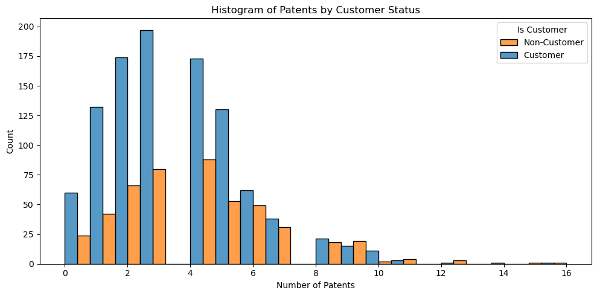
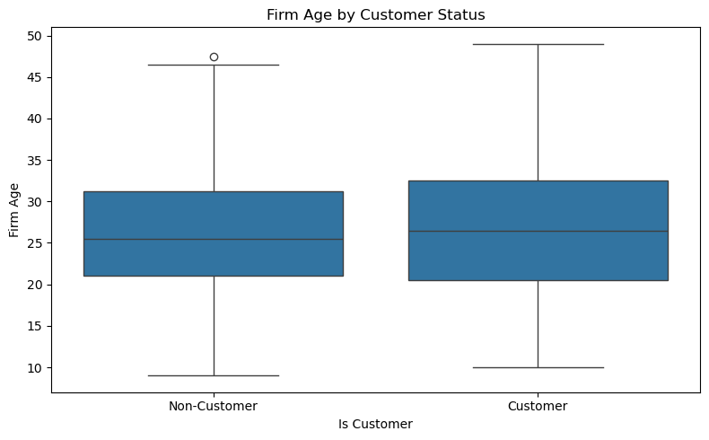
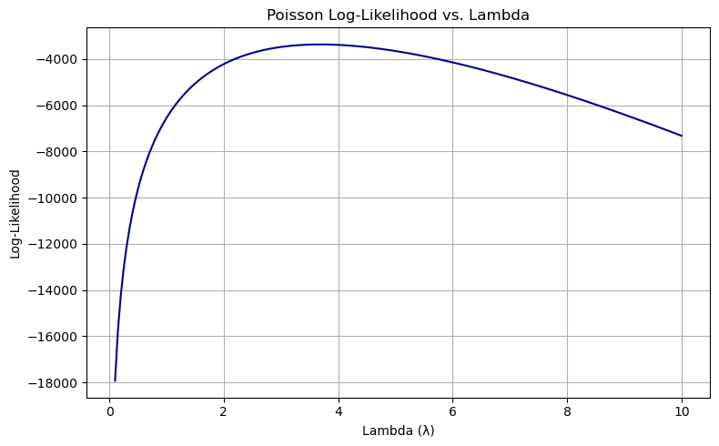
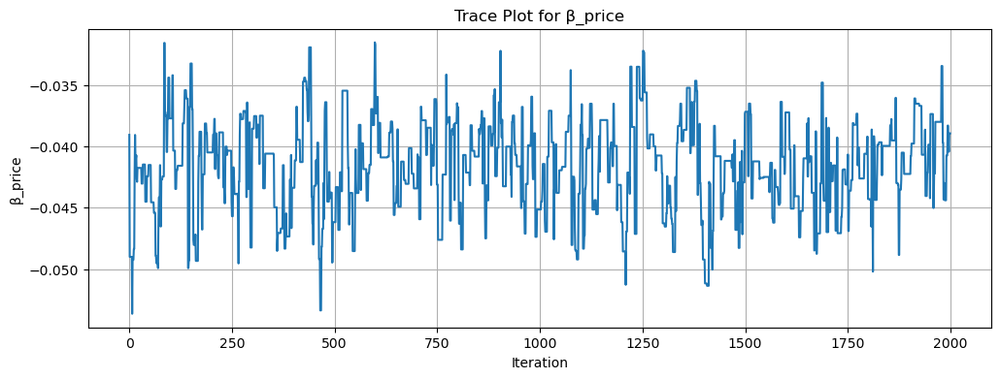
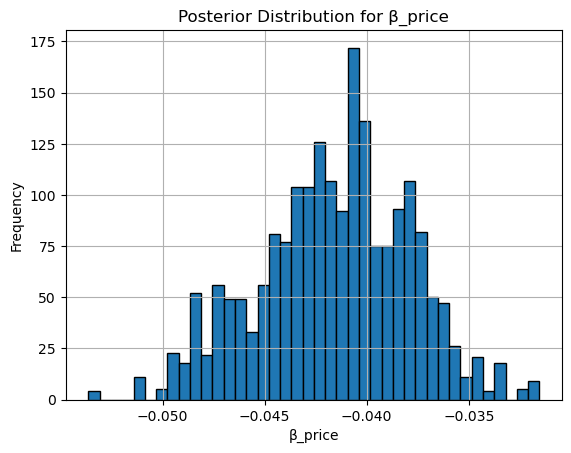
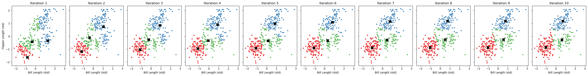
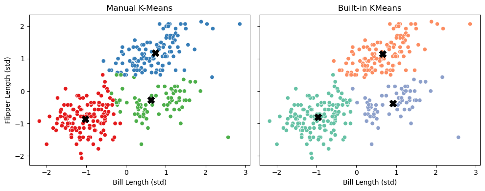
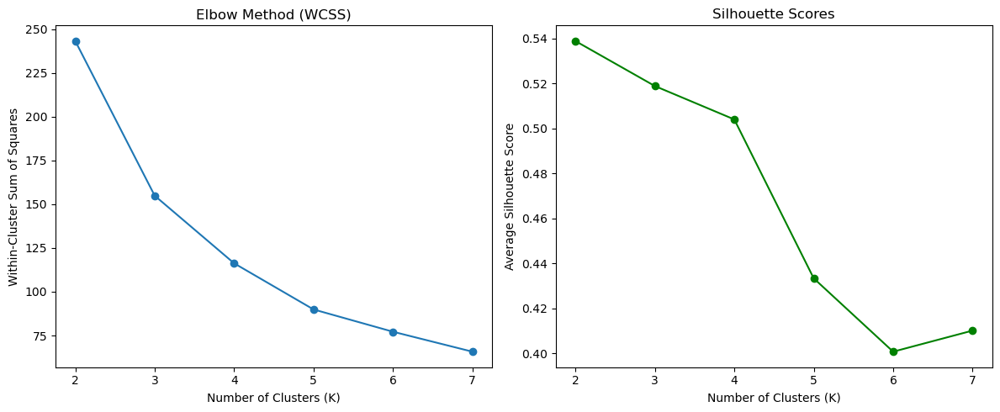

import pandas as pd
blueprinty = pd.read_csv('blueprinty.csv')
blueprinty.head()| patents | region | age | iscustomer | |
|---|---|---|---|---|
| 0 | 0 | Midwest | 32.5 | 0 |
| 1 | 3 | Southwest | 37.5 | 0 |
| 2 | 4 | Northwest | 27.0 | 1 |
| 3 | 3 | Northeast | 24.5 | 0 |
| 4 | 3 | Southwest | 37.0 | 0 |
| patents | region | age | iscustomer | |
|---|---|---|---|---|
| 0 | 0 | Midwest | 32.5 | 0 |
| 1 | 3 | Southwest | 37.5 | 0 |
| 2 | 4 | Northwest | 27.0 | 1 |
| 3 | 3 | Northeast | 24.5 | 0 |
| 4 | 3 | Southwest | 37.0 | 0 |
import matplotlib.pyplot as plt
import seaborn as sns
# Compute mean number of patents by customer status
mean_patents = blueprinty.groupby("iscustomer")["patents"].mean()
# Plot histogram of number of patents by customer status
plt.figure(figsize=(10, 5))
sns.histplot(data=blueprinty, x="patents", hue="iscustomer", multiple="dodge", bins=20)
plt.title("Histogram of Patents by Customer Status")
plt.xlabel("Number of Patents")
plt.ylabel("Count")
plt.legend(title="Is Customer", labels=["Non-Customer", "Customer"])
plt.tight_layout()
mean_patentsiscustomer
0 3.473013
1 4.133056
Name: patents, dtype: float64
# Boxplot for firm age by customer status
plt.figure(figsize=(8, 5))
sns.boxplot(x="iscustomer", y="age", data=blueprinty)
plt.title("Firm Age by Customer Status")
plt.xlabel("Is Customer")
plt.ylabel("Firm Age")
plt.xticks([0, 1], ["Non-Customer", "Customer"])
plt.tight_layout()
# Crosstab for region by customer status
region_customer_crosstab = pd.crosstab(blueprinty["region"], blueprinty["iscustomer"], normalize='index') * 100
region_customer_crosstab.round(1)| iscustomer | 0 | 1 |
|---|---|---|
| region | ||
| Midwest | 83.5 | 16.5 |
| Northeast | 45.4 | 54.6 |
| Northwest | 84.5 | 15.5 |
| South | 81.7 | 18.3 |
| Southwest | 82.5 | 17.5 |

import numpy as np
from scipy.special import gammaln
def poisson_loglikelihood(lmbda, Y):
"""
Computes the negative log-likelihood of a Poisson model with scalar lambda.
This is suitable for optimization routines like scipy.optimize.minimize.
Parameters:
lmbda : float
The Poisson rate parameter (λ), must be > 0.
Y : array-like
Observed count data (e.g., number of patents).
Returns:
float : negative log-likelihood
"""
if lmbda <= 0:
return np.inf # avoid invalid log(λ) or exp(−λ)
Y = np.asarray(Y)
log_lik = np.sum(Y * np.log(lmbda) - lmbda - gammaln(Y + 1))
return log_lik import matplotlib.pyplot as plt
Y = blueprinty["patents"].values
lambda_vals = np.linspace(0.1, 10, 200)
loglik_vals = [poisson_loglikelihood(lmb, Y) for lmb in lambda_vals]
plt.figure(figsize=(8, 5))
plt.plot(lambda_vals, loglik_vals, color='darkblue')
plt.title("Poisson Log-Likelihood vs. Lambda")
plt.xlabel("Lambda (λ)")
plt.ylabel("Log-Likelihood")
plt.grid(True)
plt.tight_layout()
plt.show()
from scipy.optimize import minimize
# Define the negative log-likelihood for use with optimizer
def neg_poisson_loglikelihood(lmbda, Y):
if lmbda <= 0:
return np.inf
return -poisson_loglikelihood(lmbda, Y)
# Use the same Y from earlier
Y = blueprinty["patents"].values
# Use scipy to minimize the negative log-likelihood
result = minimize(fun=neg_poisson_loglikelihood, x0=[1.0], args=(Y,), bounds=[(1e-6, None)])
lambda_mle = result.x[0]
lambda_mle3.6846667021660804import numpy as np
from scipy.special import gammaln
# Define Poisson log-likelihood function (negative, stabilized)
def poisson_regression_loglik(beta, Y, X):
eta = X @ beta
eta = np.clip(eta, -20, 20) # Prevent overflow in exp()
lam = np.exp(eta)
log_lik = np.sum(Y * eta - lam - gammaln(Y + 1))
return -log_lik # Return negative for minimizerimport pandas as pd
import numpy as np
from scipy.optimize import minimize
from scipy.special import gammaln
import patsy
# Create design matrix with intercept, age, age², region dummies, and customer
y, X = patsy.dmatrices('patents ~ age + I(age**2) + C(region) + iscustomer', data=blueprinty, return_type='dataframe')
Y = y.values.flatten() # Convert y to 1D
# Initial guess for beta
beta0 = np.zeros(X.shape[1])
# Optimize the likelihood
result = minimize(poisson_regression_loglik, beta0, args=(Y, X), method='BFGS')
# Extract MLE estimates and standard errors
beta_hat = result.x
hessian_inv = result.hess_inv
standard_errors = np.sqrt(np.diag(hessian_inv))
# Present results in table
results_df = pd.DataFrame({
"Coefficient": beta_hat,
"Std. Error": standard_errors
}, index=X.columns)
print(results_df.round(4)) Coefficient Std. Error
Intercept -0.5100 0.1931
C(region)[T.Northeast] 0.0292 0.0468
C(region)[T.Northwest] -0.0176 0.0572
C(region)[T.South] 0.0566 0.0562
C(region)[T.Southwest] 0.0506 0.0497
age 0.1487 0.0145
I(age ** 2) -0.0030 0.0003
iscustomer 0.2076 0.0329import statsmodels.api as sm
# Fit Poisson GLM with log link
glm_model = sm.GLM(Y, X, family=sm.families.Poisson())
glm_results = glm_model.fit()
# Display summary table
print(glm_results.summary()) Generalized Linear Model Regression Results
==============================================================================
Dep. Variable: y No. Observations: 1500
Model: GLM Df Residuals: 1492
Model Family: Poisson Df Model: 7
Link Function: Log Scale: 1.0000
Method: IRLS Log-Likelihood: -3258.1
Date: Sun, 04 May 2025 Deviance: 2143.3
Time: 17:40:46 Pearson chi2: 2.07e+03
No. Iterations: 5 Pseudo R-squ. (CS): 0.1360
Covariance Type: nonrobust
==========================================================================================
coef std err z P>|z| [0.025 0.975]
------------------------------------------------------------------------------------------
Intercept -0.5089 0.183 -2.778 0.005 -0.868 -0.150
C(region)[T.Northeast] 0.0292 0.044 0.669 0.504 -0.056 0.115
C(region)[T.Northwest] -0.0176 0.054 -0.327 0.744 -0.123 0.088
C(region)[T.South] 0.0566 0.053 1.074 0.283 -0.047 0.160
C(region)[T.Southwest] 0.0506 0.047 1.072 0.284 -0.042 0.143
age 0.1486 0.014 10.716 0.000 0.121 0.176
I(age ** 2) -0.0030 0.000 -11.513 0.000 -0.003 -0.002
iscustomer 0.2076 0.031 6.719 0.000 0.147 0.268
==========================================================================================# Create two counterfactual design matrices:
# - X_0: assumes all firms are non-customers (iscustomer = 0)
# - X_1: assumes all firms are customers (iscustomer = 1)
X_0 = X.copy()
X_1 = X.copy()
X_0["iscustomer"] = 0
X_1["iscustomer"] = 1
# Predict expected number of patents under both scenarios
y_pred_0 = np.exp(X_0 @ beta_hat)
y_pred_1 = np.exp(X_1 @ beta_hat)
# Compute difference and average effect
diff = y_pred_1 - y_pred_0
average_effect = diff.mean()
print(f"Average treatment effect of Blueprinty's software: {average_effect:.4f} additional patents")Average treatment effect of Blueprinty's software: 0.7928 additional patents<class 'pandas.core.frame.DataFrame'>
RangeIndex: 40628 entries, 0 to 40627
Data columns (total 14 columns):
# Column Non-Null Count Dtype
--- ------ -------------- -----
0 Unnamed: 0 40628 non-null int64
1 id 40628 non-null int64
2 days 40628 non-null int64
3 last_scraped 40628 non-null object
4 host_since 40593 non-null object
5 room_type 40628 non-null object
6 bathrooms 40468 non-null float64
7 bedrooms 40552 non-null float64
8 price 40628 non-null int64
9 number_of_reviews 40628 non-null int64
10 review_scores_cleanliness 30433 non-null float64
11 review_scores_location 30374 non-null float64
12 review_scores_value 30372 non-null float64
13 instant_bookable 40628 non-null object
dtypes: float64(5), int64(5), object(4)
memory usage: 4.3+ MB
None
Missing values per column:
Unnamed: 0 0
id 0
days 0
last_scraped 0
host_since 35
room_type 0
bathrooms 160
bedrooms 76
price 0
number_of_reviews 0
review_scores_cleanliness 10195
review_scores_location 10254
review_scores_value 10256
instant_bookable 0
dtype: int64
First few rows:
| Unnamed: 0 | id | days | last_scraped | host_since | room_type | bathrooms | bedrooms | price | number_of_reviews | review_scores_cleanliness | review_scores_location | review_scores_value | instant_bookable | |
|---|---|---|---|---|---|---|---|---|---|---|---|---|---|---|
| 0 | 1 | 2515 | 3130 | 4/2/2017 | 9/6/2008 | Private room | 1.0 | 1.0 | 59 | 150 | 9.0 | 9.0 | 9.0 | f |
| 1 | 2 | 2595 | 3127 | 4/2/2017 | 9/9/2008 | Entire home/apt | 1.0 | 0.0 | 230 | 20 | 9.0 | 10.0 | 9.0 | f |
| 2 | 3 | 3647 | 3050 | 4/2/2017 | 11/25/2008 | Private room | 1.0 | 1.0 | 150 | 0 | NaN | NaN | NaN | f |
| 3 | 4 | 3831 | 3038 | 4/2/2017 | 12/7/2008 | Entire home/apt | 1.0 | 1.0 | 89 | 116 | 9.0 | 9.0 | 9.0 | f |
| 4 | 5 | 4611 | 3012 | 4/2/2017 | 1/2/2009 | Private room | NaN | 1.0 | 39 | 93 | 9.0 | 8.0 | 9.0 | t |
# Drop rows with missing values in key predictors
airbnb_clean = airbnb.dropna(subset=[
"bathrooms",
"bedrooms",
"review_scores_cleanliness",
"review_scores_location",
"review_scores_value"
])
# Convert categorical variables
airbnb_clean["instant_bookable"] = airbnb_clean["instant_bookable"].map({"t": 1, "f": 0})
# One-hot encode room_type, drop one category to avoid multicollinearity
room_dummies = pd.get_dummies(airbnb_clean["room_type"], prefix="room", drop_first=True)
# Construct design matrix
X = pd.concat([
airbnb_clean[[
"price",
"bedrooms",
"bathrooms",
"review_scores_cleanliness",
"review_scores_location",
"review_scores_value",
"instant_bookable"
]],
room_dummies
], axis=1)
# Add intercept manually
X.insert(0, "intercept", 1)
# Define target variable
Y = airbnb_clean["number_of_reviews"].values
# Show dimensions for confirmation
print("X shape:", X.shape)
print("Y shape:", Y.shape)X shape: (30160, 10)
Y shape: (30160,)/tmp/ipykernel_7096/1035868469.py:12: SettingWithCopyWarning:
A value is trying to be set on a copy of a slice from a DataFrame.
Try using .loc[row_indexer,col_indexer] = value instead
See the caveats in the documentation: https://pandas.pydata.org/pandas-docs/stable/user_guide/indexing.html#returning-a-view-versus-a-copy
airbnb_clean["instant_bookable"] = airbnb_clean["instant_bookable"].map({"t": 1, "f": 0})import statsmodels.api as sm
# Ensure all columns in X are numeric
X = X.astype(float)
# Fit the Poisson regression model
poisson_model = sm.GLM(Y, X, family=sm.families.Poisson())
poisson_results = poisson_model.fit()
# View the results
print(poisson_results.summary()) Generalized Linear Model Regression Results
==============================================================================
Dep. Variable: y No. Observations: 30160
Model: GLM Df Residuals: 30150
Model Family: Poisson Df Model: 9
Link Function: Log Scale: 1.0000
Method: IRLS Log-Likelihood: -5.2900e+05
Date: Mon, 05 May 2025 Deviance: 9.3653e+05
Time: 11:28:24 Pearson chi2: 1.41e+06
No. Iterations: 6 Pseudo R-squ. (CS): 0.5649
Covariance Type: nonrobust
=============================================================================================
coef std err z P>|z| [0.025 0.975]
---------------------------------------------------------------------------------------------
intercept 3.5725 0.016 223.215 0.000 3.541 3.604
price -1.435e-05 8.3e-06 -1.729 0.084 -3.06e-05 1.92e-06
bedrooms 0.0749 0.002 37.698 0.000 0.071 0.079
bathrooms -0.1240 0.004 -33.091 0.000 -0.131 -0.117
review_scores_cleanliness 0.1132 0.001 75.820 0.000 0.110 0.116
review_scores_location -0.0768 0.002 -47.796 0.000 -0.080 -0.074
review_scores_value -0.0915 0.002 -50.902 0.000 -0.095 -0.088
instant_bookable 0.3344 0.003 115.748 0.000 0.329 0.340
room_Private room -0.0145 0.003 -5.310 0.000 -0.020 -0.009
room_Shared room -0.2519 0.009 -29.229 0.000 -0.269 -0.235
=============================================================================================| resp | task | choice | brand | ad | price | |
|---|---|---|---|---|---|---|
| 0 | 1 | 1 | 1 | N | Yes | 28 |
| 1 | 1 | 1 | 0 | H | Yes | 16 |
| 2 | 1 | 1 | 0 | P | Yes | 16 |
| 3 | 1 | 2 | 0 | N | Yes | 32 |
| 4 | 1 | 2 | 1 | P | Yes | 16 |
<class 'pandas.core.frame.DataFrame'>
RangeIndex: 3000 entries, 0 to 2999
Data columns (total 6 columns):
# Column Non-Null Count Dtype
--- ------ -------------- -----
0 resp 3000 non-null int64
1 task 3000 non-null int64
2 choice 3000 non-null int64
3 brand 3000 non-null object
4 ad 3000 non-null object
5 price 3000 non-null int64
dtypes: int64(4), object(2)
memory usage: 140.8+ KB# One-hot encode brand and ad
df_encoded = pd.get_dummies(df, columns=['brand', 'ad'], drop_first=True)
# Sort and reset index
df_encoded = df_encoded.sort_values(by=['resp', 'task']).reset_index(drop=True)
# Verify that each task has 3 rows (alternatives)
task_counts = df_encoded.groupby(['resp', 'task']).size()
assert (task_counts == 3).all(), "Each task should have 3 alternatives"
df_encoded.head()| resp | task | choice | price | brand_N | brand_P | ad_Yes | |
|---|---|---|---|---|---|---|---|
| 0 | 1 | 1 | 1 | 28 | True | False | True |
| 1 | 1 | 1 | 0 | 16 | False | False | True |
| 2 | 1 | 1 | 0 | 16 | False | True | True |
| 3 | 1 | 2 | 0 | 32 | True | False | True |
| 4 | 1 | 2 | 1 | 16 | False | True | True |
import pandas as pd
import numpy as np
from scipy.optimize import minimize
# Load and encode
df = pd.read_csv("conjoint_data.csv")
df_encoded = pd.get_dummies(df, columns=['brand', 'ad'], drop_first=True)
df_encoded = df_encoded.sort_values(by=['resp', 'task']).reset_index(drop=True)
# Convert booleans to floats (important!)
X = df_encoded[['brand_N', 'brand_P', 'ad_Yes', 'price']].astype(float).values
y = df_encoded['choice'].values
# Reshape to choice-task format
n_alternatives = 3
n_obs = len(y) // n_alternatives
X_grouped = X.reshape((n_obs, n_alternatives, -1))
y_grouped = y.reshape((n_obs, n_alternatives))
# Negative log-likelihood function
def neg_log_likelihood(beta):
ll = 0
for i in range(n_obs):
utilities = X_grouped[i] @ beta
probs = np.exp(utilities) / np.sum(np.exp(utilities))
ll += np.log(probs[y_grouped[i] == 1][0])
return -ll
# Initial guess and estimation
initial_beta = np.zeros(X.shape[1])
result = minimize(neg_log_likelihood, initial_beta, method='BFGS')
# Extract results
beta_hat = result.x
hessian_inv = result.hess_inv
standard_errors = np.sqrt(np.diag(hessian_inv))
ci_lower = beta_hat - 1.96 * standard_errors
ci_upper = beta_hat + 1.96 * standard_errors
# Summary
summary_df = pd.DataFrame({
'Coefficient': beta_hat,
'Std. Error': standard_errors,
'95% CI Lower': ci_lower,
'95% CI Upper': ci_upper
}, index=['brand_N', 'brand_P', 'ad_Yes', 'price'])
print(summary_df) Coefficient Std. Error 95% CI Lower 95% CI Upper
brand_N 0.941195 0.018302 0.905323 0.977068
brand_P 0.501616 0.004777 0.492252 0.510979
ad_Yes -0.731994 0.004563 -0.740938 -0.723051
price -0.099480 0.005067 -0.109413 -0.089548import pandas as pd
import numpy as np
# Log-prior: N(0, 0.05^2) for binary vars, N(0, 0.005^2) for price
def log_prior(beta):
prior_sd = np.array([0.05, 0.05, 0.05, 0.005])
return -0.5 * np.sum((beta / prior_sd)**2) - np.sum(np.log(prior_sd * np.sqrt(2 * np.pi)))
# Log-posterior
def log_posterior(beta):
return -neg_log_likelihood(beta) + log_prior(beta)
# MCMC sampler
def metropolis_sampler(log_post, initial, n_samples=3000, proposal_sd=[0.05, 0.05, 0.05, 0.005]):
samples = [initial]
current_log_post = log_post(initial)
np.random.seed(0)
for _ in range(n_samples - 1):
proposal = samples[-1] + np.random.normal(scale=proposal_sd)
proposal_log_post = log_post(proposal)
log_accept_ratio = proposal_log_post - current_log_post
if np.log(np.random.rand()) < log_accept_ratio:
samples.append(proposal)
current_log_post = proposal_log_post
else:
samples.append(samples[-1])
return np.array(samples)
# Run it
initial_beta = np.zeros(X.shape[1])
mcmc_samples = metropolis_sampler(log_posterior, initial_beta)
# Discard burn-in
mcmc_samples = mcmc_samples[1000:]
# Posterior summary
posterior_means = mcmc_samples.mean(axis=0)
posterior_sds = mcmc_samples.std(axis=0)
posterior_ci_lower = np.percentile(mcmc_samples, 2.5, axis=0)
posterior_ci_upper = np.percentile(mcmc_samples, 97.5, axis=0)
posterior_summary = pd.DataFrame({
"Posterior Mean": posterior_means,
"Posterior SD": posterior_sds,
"95% CI Lower": posterior_ci_lower,
"95% CI Upper": posterior_ci_upper
}, index=['brand_N', 'brand_P', 'ad_Yes', 'price'])
print(posterior_summary) Posterior Mean Posterior SD 95% CI Lower 95% CI Upper
brand_N 0.150717 0.047870 0.064154 0.248803
brand_P 0.024741 0.040724 -0.059125 0.104080
ad_Yes -0.182542 0.043102 -0.265188 -0.092351
price -0.041593 0.003704 -0.049004 -0.034733import matplotlib.pyplot as plt
# Trace plot for price
plt.figure(figsize=(12, 4))
plt.plot(mcmc_samples[:, 3])
plt.title("Trace Plot for β_price")
plt.xlabel("Iteration")
plt.ylabel("β_price")
plt.grid(True)
plt.show()
# Histogram for price
plt.hist(mcmc_samples[:, 3], bins=40, edgecolor='black')
plt.title("Posterior Distribution for β_price")
plt.xlabel("β_price")
plt.ylabel("Frequency")
plt.grid(True)
plt.show()

| species | island | bill_length_mm | bill_depth_mm | flipper_length_mm | body_mass_g | sex | year | |
|---|---|---|---|---|---|---|---|---|
| 0 | Adelie | Torgersen | 39.1 | 18.7 | 181 | 3750 | male | 2007 |
| 1 | Adelie | Torgersen | 39.5 | 17.4 | 186 | 3800 | female | 2007 |
| 2 | Adelie | Torgersen | 40.3 | 18.0 | 195 | 3250 | female | 2007 |
| 3 | Adelie | Torgersen | 36.7 | 19.3 | 193 | 3450 | female | 2007 |
| 4 | Adelie | Torgersen | 39.3 | 20.6 | 190 | 3650 | male | 2007 |
import pandas as pd
import numpy as np
import matplotlib.pyplot as plt
from sklearn.preprocessing import StandardScaler
import seaborn as sns
# Load and clean the data
penguins = pd.read_csv("palmer_penguins.csv")
penguins = penguins.dropna()
# Use only the selected features
features = ['bill_length_mm', 'flipper_length_mm']
X = penguins[features].values
# Standardize the features
scaler = StandardScaler()
X_scaled = scaler.fit_transform(X)
# Manual K-Means with internal iteration tracking
def manual_kmeans_with_plot(X, k=3, max_iters=10, seed=42):
np.random.seed(seed)
n_samples = X.shape[0]
centroids = X[np.random.choice(n_samples, k, replace=False)]
history = []
for iteration in range(max_iters):
# Assign labels
distances = np.linalg.norm(X[:, np.newaxis] - centroids, axis=2)
labels = np.argmin(distances, axis=1)
# Save current state
history.append((centroids.copy(), labels.copy()))
# Update centroids
new_centroids = np.array([X[labels == j].mean(axis=0) for j in range(k)])
if np.allclose(centroids, new_centroids):
break
centroids = new_centroids
return history
# Run K-Means and capture all iterations
history = manual_kmeans_with_plot(X_scaled, k=3, max_iters=10)
# Plot all iterations in a single row
def plot_kmeans_iterations(history, X_scaled):
n_iter = len(history)
fig, axes = plt.subplots(1, n_iter, figsize=(n_iter * 3, 4), sharex=True, sharey=True)
for i, (centroids, labels) in enumerate(history):
ax = axes[i]
sns.scatterplot(x=X_scaled[:, 0], y=X_scaled[:, 1], hue=labels, palette="Set1", ax=ax, legend=False, s=20)
ax.scatter(centroids[:, 0], centroids[:, 1], c='black', s=100, marker='X')
ax.set_title(f"Iteration {i+1}")
ax.set_xlabel("Bill Length (std)")
if i == 0:
ax.set_ylabel("Flipper Length (std)")
else:
ax.set_ylabel("")
plt.tight_layout()
plt.show()
# Call the plot function
plot_kmeans_iterations(history, X_scaled)
# Import the built-in KMeans from scikit-learn
from sklearn.cluster import KMeans
import seaborn as sns
import matplotlib.pyplot as plt
# Run built-in KMeans on the same standardized data
kmeans_builtin = KMeans(n_clusters=3, random_state=42, n_init=10)
builtin_labels = kmeans_builtin.fit_predict(X_scaled)
# Plot comparison: manual vs. built-in
fig, axes = plt.subplots(1, 2, figsize=(10, 4), sharex=True, sharey=True)
# Manual KMeans (last iteration)
centroids_manual, labels_manual = history[-1]
sns.scatterplot(x=X_scaled[:, 0], y=X_scaled[:, 1], hue=labels_manual, palette="Set1", ax=axes[0], legend=False)
axes[0].scatter(centroids_manual[:, 0], centroids_manual[:, 1], c='black', s=100, marker='X')
axes[0].set_title("Manual K-Means")
axes[0].set_xlabel("Bill Length (std)")
axes[0].set_ylabel("Flipper Length (std)")
# Built-in KMeans
sns.scatterplot(x=X_scaled[:, 0], y=X_scaled[:, 1], hue=builtin_labels, palette="Set2", ax=axes[1], legend=False)
axes[1].scatter(kmeans_builtin.cluster_centers_[:, 0], kmeans_builtin.cluster_centers_[:, 1], c='black', s=100, marker='X')
axes[1].set_title("Built-in KMeans")
axes[1].set_xlabel("Bill Length (std)")
axes[1].set_ylabel("")
plt.tight_layout()
plt.show()
from sklearn.metrics import silhouette_score
# Evaluate WCSS and Silhouette for K = 2 to 7
wcss = []
silhouette_scores = []
K_range = range(2, 8)
for k in K_range:
kmeans = KMeans(n_clusters=k, random_state=42, n_init=10)
labels = kmeans.fit_predict(X_scaled)
wcss.append(kmeans.inertia_)
silhouette_scores.append(silhouette_score(X_scaled, labels))
# Plot both metrics side by side
fig, axes = plt.subplots(1, 2, figsize=(12, 5))
# WCSS plot
axes[0].plot(K_range, wcss, marker='o')
axes[0].set_title("Elbow Method (WCSS)")
axes[0].set_xlabel("Number of Clusters (K)")
axes[0].set_ylabel("Within-Cluster Sum of Squares")
# Silhouette score plot
axes[1].plot(K_range, silhouette_scores, marker='o', color='green')
axes[1].set_title("Silhouette Scores")
axes[1].set_xlabel("Number of Clusters (K)")
axes[1].set_ylabel("Average Silhouette Score")
plt.tight_layout()
plt.show()
import pandas as pd
drivers = pd.read_csv("data_for_drivers_analysis.csv")
# Calculate Pearson correlations between satisfaction and each predictor
# Drop ID and brand columns
correlations = drivers.corr(numeric_only=True)['satisfaction'].drop(['satisfaction', 'id', 'brand'])
# Create DataFrame with Pearson r and r^2
pearson_df = correlations.rename('Pearson r').to_frame()
pearson_df['Pearson r^2'] = pearson_df['Pearson r'] ** 2
# Sort by squared correlation
pearson_df = pearson_df.sort_values(by='Pearson r^2', ascending=False)
pearson_df| Pearson r | Pearson r^2 | |
|---|---|---|
| trust | 0.255706 | 0.065385 |
| impact | 0.254539 | 0.064790 |
| service | 0.251098 | 0.063050 |
| easy | 0.212985 | 0.045362 |
| appealing | 0.207997 | 0.043263 |
| rewarding | 0.194561 | 0.037854 |
| build | 0.191896 | 0.036824 |
| differs | 0.184801 | 0.034151 |
| popular | 0.171425 | 0.029387 |
from sklearn.linear_model import LinearRegression
from sklearn.preprocessing import StandardScaler
# Prepare X and y
X = drivers[['trust', 'build', 'differs', 'easy', 'appealing', 'rewarding', 'popular', 'service', 'impact']]
y = drivers['satisfaction']
# Standardize both X and y
scaler_X = StandardScaler()
X_scaled = scaler_X.fit_transform(X)
scaler_y = StandardScaler()
y_scaled = scaler_y.fit_transform(y.values.reshape(-1, 1)).ravel()
# Fit linear regression model on standardized variables
reg = LinearRegression()
reg.fit(X_scaled, y_scaled)
# Get standardized coefficients and square them
coef_std = pd.Series(reg.coef_, index=X.columns, name='Standardized Coef')
coef_df = coef_std.to_frame()
coef_df['Standardized Coef^2'] = coef_df['Standardized Coef'] ** 2
# Sort by squared value
coef_df = coef_df.sort_values(by='Standardized Coef^2', ascending=False)
coef_df| Standardized Coef | Standardized Coef^2 | |
|---|---|---|
| impact | 0.128422 | 0.016492 |
| trust | 0.115752 | 0.013398 |
| service | 0.088390 | 0.007813 |
| appealing | 0.033835 | 0.001145 |
| differs | 0.027847 | 0.000775 |
| easy | 0.021970 | 0.000483 |
| build | 0.019979 | 0.000399 |
| popular | 0.016616 | 0.000276 |
| rewarding | 0.005067 | 0.000026 |
# Full model R²
full_model = LinearRegression().fit(X, y)
r2_full = full_model.score(X, y)
# Calculate usefulness (ΔR²) for each predictor
usefulness_scores = {}
for col in X.columns:
X_reduced = X.drop(columns=[col])
reduced_model = LinearRegression().fit(X_reduced, y)
r2_reduced = reduced_model.score(X_reduced, y)
usefulness_scores[col] = r2_full - r2_reduced
# Convert to DataFrame and normalize to sum to 100%
usefulness_df = pd.DataFrame.from_dict(usefulness_scores, orient='index', columns=['ΔR² (Usefulness)'])
usefulness_df['% Usefulness'] = 100 * usefulness_df['ΔR² (Usefulness)'] / usefulness_df['ΔR² (Usefulness)'].sum()
usefulness_df = usefulness_df.sort_values(by='% Usefulness', ascending=False)
usefulness_df| ΔR² (Usefulness) | % Usefulness | |
|---|---|---|
| impact | 0.011203 | 42.834168 |
| trust | 0.008243 | 31.517391 |
| service | 0.004674 | 17.869775 |
| appealing | 0.000710 | 2.713117 |
| differs | 0.000550 | 2.104285 |
| easy | 0.000289 | 1.103478 |
| build | 0.000266 | 1.016743 |
| popular | 0.000204 | 0.780849 |
| rewarding | 0.000016 | 0.060194 |
import numpy as np
import pandas as pd
import random
from sklearn.linear_model import LinearRegression
def shapley_approx(X, y, n_samples=1000, seed=42):
np.random.seed(seed)
random.seed(seed)
features = list(X.columns)
shapley_vals = pd.Series(0.0, index=features)
for _ in range(n_samples):
perm = random.sample(features, len(features))
current_features = []
prev_r2 = 0
for feature in perm:
current_features.append(feature)
r2 = LinearRegression().fit(X[current_features], y).score(X[current_features], y)
shapley_vals[feature] += r2 - prev_r2
prev_r2 = r2
shapley_vals /= n_samples
shapley_pct = shapley_vals / shapley_vals.sum() * 100
return shapley_pct.to_frame(name='Shapley %')# Use with your key drivers dataset
X = drivers[['trust', 'build', 'differs', 'easy', 'appealing',
'rewarding', 'popular', 'service', 'impact']]
y = drivers['satisfaction']
shapley_df = shapley_approx(X, y, n_samples=1000) # Increase to 5000 for more accuracy
shapley_df| Shapley % | |
|---|---|
| trust | 19.196007 |
| build | 6.796937 |
| differs | 6.472069 |
| easy | 8.724541 |
| appealing | 8.013306 |
| rewarding | 6.535585 |
| popular | 5.155639 |
| service | 17.430698 |
| impact | 21.675219 |
import numpy as np
import pandas as pd
def johnson_relative_weights(X, y):
# Step 1: Correlation matrix
df = pd.concat([X, y.rename("target")], axis=1)
R = df.corr()
# Step 2: Extract relevant parts
rxx = R.loc[X.columns, X.columns].values # predictor-predictor correlation
rxy = R.loc[X.columns, "target"].values.reshape(-1, 1) # predictor-outcome correlation
# Step 3: Eigen decomposition
eigval, eigvec = np.linalg.eigh(rxx)
eigval_matrix = np.diag(np.sqrt(eigval))
Lambda = eigvec @ eigval_matrix @ eigvec.T
# Step 4: Transformation
beta = np.linalg.inv(Lambda.T @ Lambda) @ Lambda.T @ rxy
raw_weights = (Lambda @ beta) ** 2
# Step 5: Normalize to 100%
relative_weights = 100 * (raw_weights / raw_weights.sum()).flatten()
return pd.DataFrame({
"Johnson's Epsilon": relative_weights
}, index=X.columns).sort_values(by="Johnson's Epsilon", ascending=False)X = drivers[['trust', 'build', 'differs', 'easy', 'appealing',
'rewarding', 'popular', 'service', 'impact']]
y = drivers['satisfaction']
johnson_df = johnson_relative_weights(X, y)
johnson_df| Johnson's Epsilon | |
|---|---|
| trust | 15.565461 |
| impact | 15.423711 |
| service | 15.009598 |
| easy | 10.798875 |
| appealing | 10.298972 |
| rewarding | 9.011464 |
| build | 8.766222 |
| differs | 8.129991 |
| popular | 6.995705 |
from sklearn.ensemble import RandomForestRegressor
import pandas as pd
# X and y should already be defined
X = drivers[['trust', 'build', 'differs', 'easy', 'appealing',
'rewarding', 'popular', 'service', 'impact']]
y = drivers['satisfaction']
# Fit a random forest model
rf = RandomForestRegressor(n_estimators=1000, random_state=42)
rf.fit(X, y)
# Get feature importances (mean decrease in Gini)
gini_importance = rf.feature_importances_
# Convert to a sorted DataFrame
gini_df = pd.DataFrame({
'Mean Decrease in Gini': gini_importance
}, index=X.columns)
gini_df['% Gini'] = 100 * gini_df['Mean Decrease in Gini'] / gini_df['Mean Decrease in Gini'].sum()
gini_df = gini_df.sort_values(by='% Gini', ascending=False)
gini_df| Mean Decrease in Gini | % Gini | |
|---|---|---|
| trust | 0.152571 | 15.257117 |
| impact | 0.142281 | 14.228064 |
| service | 0.132851 | 13.285069 |
| rewarding | 0.104017 | 10.401730 |
| build | 0.099515 | 9.951450 |
| easy | 0.098072 | 9.807195 |
| popular | 0.095963 | 9.596287 |
| differs | 0.090348 | 9.034818 |
| appealing | 0.084383 | 8.438269 |
# Combine all into a single DataFrame by joining on index (variable names)
final_table = pd.concat([
pearson_df['Pearson r^2'] * 100,
coef_df['Standardized Coef^2'] * 100,
usefulness_df['% Usefulness'],
shapley_df['Shapley %'],
johnson_df["Johnson's Epsilon"],
gini_df['% Gini']
], axis=1)
# Rename columns to match slide 75
final_table.columns = [
'Pearson Correlations',
'Standardized Multiple Regression',
'Usefulness (ΔR²)',
'Shapley Values',
'Johnson\'s Epsilon',
'Mean Decrease in RF Gini Coefficient'
]
# Round and sort
final_table = final_table.round(1)
final_table = final_table.sort_values(by='Shapley Values', ascending=False)
final_table| Pearson Correlations | Standardized Multiple Regression | Usefulness (ΔR²) | Shapley Values | Johnson's Epsilon | Mean Decrease in RF Gini Coefficient | |
|---|---|---|---|---|---|---|
| impact | 6.5 | 1.6 | 42.8 | 21.7 | 15.4 | 14.2 |
| trust | 6.5 | 1.3 | 31.5 | 19.2 | 15.6 | 15.3 |
| service | 6.3 | 0.8 | 17.9 | 17.4 | 15.0 | 13.3 |
| easy | 4.5 | 0.0 | 1.1 | 8.7 | 10.8 | 9.8 |
| appealing | 4.3 | 0.1 | 2.7 | 8.0 | 10.3 | 8.4 |
| build | 3.7 | 0.0 | 1.0 | 6.8 | 8.8 | 10.0 |
| rewarding | 3.8 | 0.0 | 0.1 | 6.5 | 9.0 | 10.4 |
| differs | 3.4 | 0.1 | 2.1 | 6.5 | 8.1 | 9.0 |
| popular | 2.9 | 0.0 | 0.8 | 5.2 | 7.0 | 9.6 |